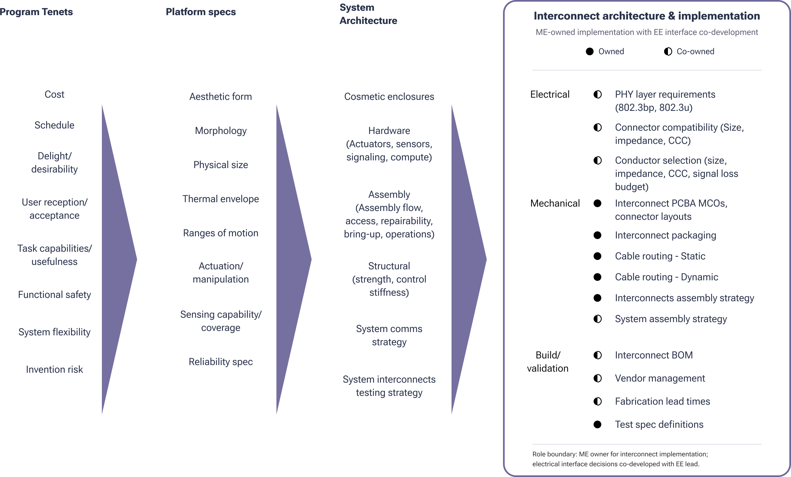

Multi-Joint Electromechanical Interconnect Architecture
I owned the interconnect architecture for a complex multi-joint electromechanical platform, translating early component placement, motion constraints, and packaging limits into a power and signal distribution strategy. The work connected mechanical packaging, cable management, connector selection, high-speed signaling constraints, vendor input, interface PCBAs, and prototype build support.

Problem
The platform needed reliable power and high-speed data distribution across multiple moving joints while still fitting within tight mechanical packaging. The architecture had to balance motion range, cable routing, connector space, serviceability, electrical constraints, reliability risk, and prototype build practicality.
My Role
I drove the interconnect architecture from early concept studies through prototype execution. My work included comparing cable-management strategies, defining power and signal routing assumptions, coordinating connector and interface decisions, creating documentation for build teams, working with vendors, and supporting the physical integration of the cable system.
Approach
- Mapped the system into functional zones so power, signal, motion, and packaging constraints could be discussed clearly across teams.
- Compared cable-management options against reliability, available volume, bend behavior, assembly access, signal integrity, and supplier feasibility.
- Built spreadsheet-based sizing and trade-study tools to evaluate architecture options quickly as component placement evolved.
- Coordinated interface definitions between mechanical and electrical stakeholders so connectors, PCBAs, harnesses, and routing constraints stayed aligned.
- Supported prototype execution by tracking cable definitions, documentation, fabrication needs, inventory, and assembly constraints.
Key Decisions
- Selected interconnect strategies based on the combined mechanical and electrical trade space, rather than optimizing only for packaging or only for electrical performance.
- Treated cable routing as a platform architecture problem, not a late-stage harness detail, so joint motion and serviceability could be addressed earlier.
- Used generalized sizing tools and interface maps to keep decisions adaptable while the surrounding product architecture was still changing.
- Created documentation and build support paths that made prototype assembly less dependent on informal knowledge.